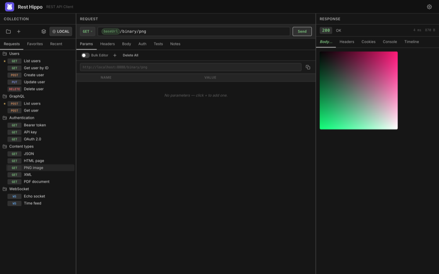
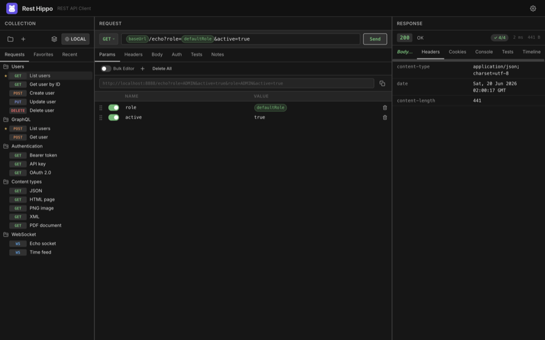
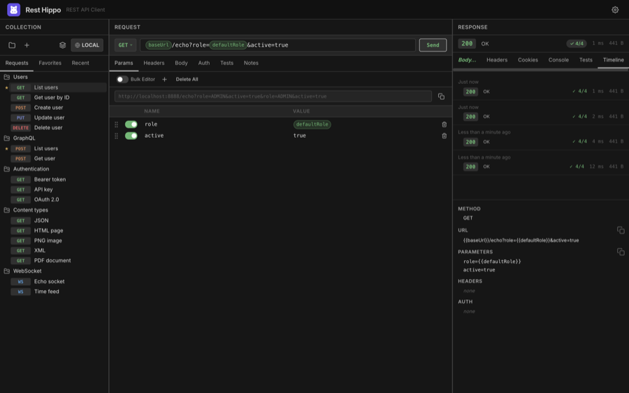
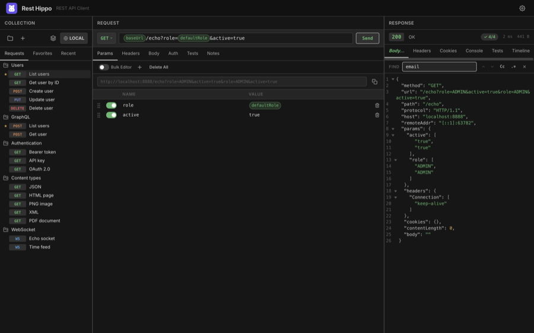

Reading Responses
When a request returns, the right panel fills in. The status bar at the top shows the status code and text, the elapsed time, and the response size — plus a captured badge if any captures ran, and a green/red test badge if any assertions ran.

Below the status bar, a row of tabs organizes the response: Body, Preview, Headers, Cookies, Console, Tests, and Timeline. The Tests tab appears only when the run has assertions.
Body
The Body tab renders the response according to its content type. By default it's Styled — pretty-printed and syntax-highlighted:
JSON / YAML / XML / HTML — indented and colorized
Markdown — rendered
JavaScript / CSS — colorized
Images — shown inline:

Binary — shown as a hex dump
Secondary-click (right-click) the Body tab for options: switch the render
mode between Styled, Raw (plain monospace), and Hex; Copy the
body; Download it (Rest Hippo picks an extension from the content type); or Copy
as cURL to reproduce the whole request on the command line.
Preview
For HTML and Markdown responses, the Preview tab renders the content live in
a sandboxed view, so you can see the page as a browser would. Any console.log
output the page produces is captured on the Console tab.
PDF responses open in Rest Hippo's built-in PDF viewer with zoom and page navigation.
Streaming responses
Some endpoints send their body incrementally rather than all at once —
Server-Sent Events (text/event-stream), LLM token streams, and chunked logs.
Rest Hippo consumes these live: the Body tab becomes a timestamped, scrolling log
that fills as data arrives, instead of waiting for the response to finish.
- A response whose
Content-Typeistext/event-streamstreams automatically — each SSE event appears as its own row as it is received, with named events (e.g. an LLM'scontent_block_delta) tagged for clarity. - A response whose
Content-Typeisapplication/x-ndjsonstreams live too, but only when you enable Stream NDJSON responses live under Settings → Request. It is off by default, so a finite NDJSON document keeps the formatted Body view; turn it on to watch a live NDJSON feed line by line. While the setting is off and an NDJSON request is in flight, Rest Hippo shows a brief reminder over the loading view pointing you at the setting — handy when an endless feed would otherwise just sit and buffer. The reminder clears as soon as the request finishes.
While a stream is running the toolbar shows its live state and an event/byte counter. You control the stream with the controls you already use elsewhere:
- Stop — the request editor's Send button becomes Stop for the whole duration of the stream, exactly like any other in-flight request. Click it to end the stream and abort the underlying request immediately.
- Save — right-click the response Body tab and choose Download to write the full stream to a file, including everything received so far on a stream that is still running or has been stopped.
The on-screen log is capped so a long-running (or never-ending) stream stays memory-bounded; the complete stream is always available through the Body tab's Download menu item.
The live log itself is session-scoped and isn't persisted, but each streaming run leaves a record in the Timeline — when it was sent, how long it ran, how many events and bytes arrived, and the last few events received. Reopening that record shows the summary in place of a body, so you can review a past stream even though its full payload isn't kept.
Headers
The Headers tab lists every response header as a name/value table:

Cookies
The Cookies tab parses the response's Set-Cookie headers into a table —
name, value, domain, path, and the Secure / HttpOnly / SameSite / Expires
attributes. If the collection has cookie sending
enabled, these cookies are stored and reused on later requests.
Tests
The Tests tab shows the result of any assertions attached to the request — a quick way to turn a request into an API check. Each assertion appears with a ✓ pass or ✗ fail marker, its name, and (on failure) the reason it failed; a summary line at the top counts how many passed and failed. The status bar also shows a compact pass/fail badge, green when everything passed and red when anything failed, so you can tell at a glance without switching tabs.

There are two ways to author assertions, and both run after the response arrives and feed the same Tests tab:
- No-code grid — the Tests request tab (enable it under Settings → Request → Show Tests tab). Add a row per check: pick a source (status, response time, a header, the body, or a JSON-path value), a matcher (equals, contains, exists, less than, matches, …), and an expected value.
- Scripted —
hippo.test()in the after-response pane of the Scripts tab, for checks that need logic.
Results are saved with the run, so reopening a past entry in the Timeline shows whether that run passed.
Timeline
The Timeline tab keeps a short history of the request's recent runs. Each entry records the status, timing, a pass/fail count for any assertions that ran, and a snapshot of what was sent — method, URL, parameters, headers, and auth — so you can compare runs and reopen an earlier response. Streaming runs appear here too, recorded as a summary (duration, event/byte counts, and the last events) rather than a body:

How many runs are kept is configurable in Settings → History.
Searching the body
Press ⌘/Ctrl+F with the response focused to open the Find bar:

- Type to highlight matches; the counter shows the active match and the total.
- Enter / Shift+Enter jump to the next/previous match.
- Toggle case-sensitive and regex matching.
- Esc closes the bar.
⌘/Ctrl+A selects the whole body text (when the find box isn't focused).
Filtering the body
Press ⌘/Ctrl+Shift+F with the response focused to open the Filter bar. Where Find highlights matches, Filter transforms the body to just the fields your expression selects, re-rendered in the same styled view. The expression language depends on the body's type:
- JSON — a jq filter, e.g.
.items[] | select(.active) | .name. - YAML — the same jq filter applied to the parsed document (like
yq); the result is re-emitted as YAML. - XML — an XPath expression,
e.g.
//book/title.
Type to filter as you go; an invalid expression turns the box red and leaves the original body untouched. Esc or the ✕ button closes the bar and restores the full response.
Filtering is only offered for a styled JSON, YAML, or XML body. If the body is shown in Raw or Hex mode, or is some other content type, a notification explains that the current MIME type or view doesn't support filtering.
Next: Scripts →